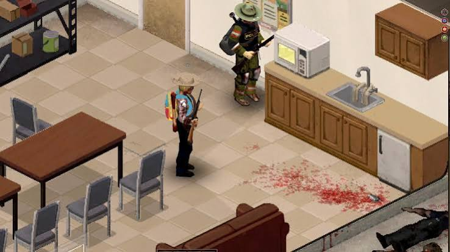
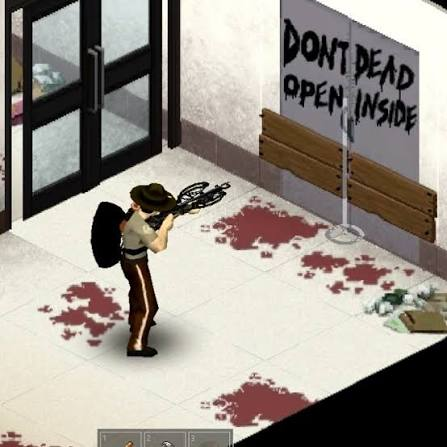

Você vai morrer. A pergunta é quando.
Project Zomboid é um simulador de sobrevivência zumbi em mundo aberto. Aqui você encontra o que precisa saber para durar mais um dia em Knox Country.
Ler o guia dos primeiros diasInício
Project Zomboid é um simulador de sobrevivência zumbi em mundo aberto. Aqui você encontra o que precisa saber para durar mais um dia em Knox Country.
Ler o guia dos primeiros dias

Profissões, atributos iniciais e perícias que definem seu começo.
Ver personagens

Este é um projeto acadêmico de desenvolvimento web, inspirado na wiki oficial do Project Zomboid. O conteúdo é organizado para quem joga e para quem quer entender o jogo antes de começar.
Conhecer a história do jogo